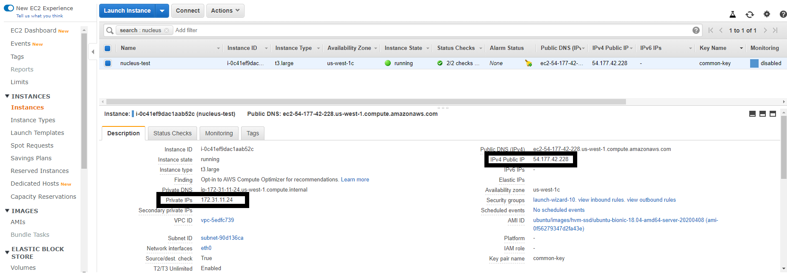

设置技巧#
Isaac Sim Modes
Isaac Sim 完整应用
这是主要的窗口化 Isaac Sim 应用程序。
此模式包含所有 Isaac Sim 扩展，且其中大多数默认已启用。
Isaac Sim 完整流式传输应用（使用 Isaac Sim WebRTC 流式传输客户端）
这是 Isaac Sim 的无头版本。它可以在配备 RTX GPU 的工作站上远程运行，并通过适用于 Linux、Windows 和 macOS 的 Isaac Sim WebRTC 流式传输客户端 应用进行访问，或者通过通过 Docker Compose 部署的 基于 Web 的查看器 进行访问。
此模式包含所有 Isaac Sim 扩展，且其中大多数默认已启用。
Isaac Sim Python
这是一个用于运行 Python 示例的小型应用。
请参阅 Python 环境。
Isaac Sim 启动脚本
脚本 |
描述 |
|---|---|
|
Isaac Sim 完整应用 |
|
带有 Isaac Sim WebRTC 流式传输客户端服务的 Isaac Sim 无头完整应用 |
|
启用 Fabric 的 Isaac Sim 完整应用 |
|
启用 XR 和 VR 的 Isaac Sim 基础应用 |
|
Isaac Sim Jupyter Notebook 可执行文件 |
|
Isaac Sim Python 可执行文件 |
|
Isaac Sim Python 环境设置 |
|
用于清除本地缓存的脚本 |
|
安装后需运行一次的脚本 |
|
用于预热着色器缓存的脚本 |
脚本 |
描述 |
|---|---|
|
Isaac Sim 完整应用 |
|
带有 Isaac Sim WebRTC 流式传输客户端服务的 Isaac Sim 无头完整应用 |
|
启用 Fabric 的 Isaac Sim 完整应用 |
|
启用 XR 和 VR 的 Isaac Sim 基础应用 |
|
Isaac Sim Python 可执行文件 |
|
Isaac Sim Python 环境设置 |
|
用于清除本地缓存的脚本 |
|
安装后需运行一次的脚本 |
|
用于预热着色器缓存的脚本 |
脚本 |
描述 |
|---|---|
|
用于以窗口化应用模式运行 Isaac Sim 的脚本 |
|
以无头模式运行 Isaac Sim 并启用 Isaac Sim WebRTC Streaming Client 服务的脚本 |
|
Isaac Sim Jupyter Notebook 可执行文件 |
|
Isaac Sim Python 可执行文件 |
|
Isaac Sim Python 环境设置 |
|
用于清除本地缓存的脚本 |
|
用于预热着色器缓存的脚本 |
脚本 |
描述 |
|---|---|
|
用于以窗口化应用模式运行 Isaac Sim 的脚本 |
|
Isaac Sim Python 可执行文件 |
|
Isaac Sim Python 环境设置 |
|
用于清除本地缓存的脚本 |
|
用于预热着色器缓存的脚本 |
Isaac Sim CLI Launch flags
标志 |
描述 |
|---|---|
|
指示使用给定值覆盖配置键。 |
|
在启动前清除 $cache 文件夹。 |
|
在启动前清除 $data 文件夹。 |
|
不启动任何扩展，仅加载它们。 |
|
启用扩展（将扩展添加到启用列表的简写方式）。 |
|
在启动时执行控制台命令 |
|
添加用于查找扩展的扩展文件夹。 |
|
添加直接扩展路径（允许添加单个扩展）。 |
|
仅解析并下载所有扩展，随后立即退出。 |
|
此帮助消息 |
|
在控制台中显示信息日志输出 |
|
列出所有本地扩展并退出。 |
|
列出所有注册表扩展并退出。 |
|
合并配置文件。 |
|
启用便携模式。便携根目录默认为 ${kit} 路径。 |
|
启用便携模式，并将 data/cache/logs 文件夹放置在该位置。 |
|
将扩展发布到注册表并退出。 |
|
允许在发布时覆盖注册表中的扩展。 |
|
不从 user.config 文件加载持久化设置。 |
|
从注册表中取消发布扩展并退出。 |
|
在扩展注册表中查找最新版本，并更新所有已启用的扩展。 |
|
在控制台中显示详细日志输出 |
|
暂停执行并等待调试器附加。 |
Kit Extension Registry
Kit 扩展注册表
注意
从 Isaac Sim 6.0 开始，Kit 扩展注册表现由 Kit SDK 自动管理。如果您有指定 Kit 注册表设置的自定义 .kit 文件或配置覆盖，请将其移除。
针对 Isaac Sim 6.0 及更高版本的迁移：如果您有包含 [settings.exts."omni.kit.registry.nucleus"] 下 Kit 注册表设置的自定义 .kit 配置文件或用户配置覆盖，建议将其删除以确保兼容性。
Kit SDK 现在会自动处理注册表配置，不再需要自定义注册表覆盖。删除这些设置可确保与 Isaac Sim 6.0 及更高版本的兼容性。
要添加自定义注册表，请转到 Window > Extensions，并在 Extension Registries 部分添加新的自定义注册表。
Differences Between Workstation And Docker
工作站与 Docker 之间的差异
安装 Isaac Sim 有两种方法：
注意
以下是工作站安装与 Docker 安装之间的主要区别：
Isaac Sim Docker 容器不包含 Nucleus，默认情况下将直接从云端访问资产。
工作站软件包的推荐根目录为 ~/isaacsim 或 C:\isaacsim，而 Docker 容器中的根目录为 /isaac-sim。
有关常见路径的差异，请参阅 Isaac Sim 应用位置。
Common Path Locations
Isaac Sim 应用位置
~/isaacsim
C:\isaacsim
/isaac-sim
Isaac Sim 日志位置
~/.nvidia-omniverse/logs/Kit/Isaac-Sim
%userprofile%\.nvidia-omniverse\logs\Kit\Isaac-Sim
/root/.nvidia-omniverse/logs/Kit/Isaac-Sim
Isaac Sim 着色器缓存位置
~/.cache/ov/Kit
%userprofile%\AppData\Local\ov\cache\Kit
/root/.cache/ov/Kit
Isaac Sim 配置位置
~/.local/share/ov/data/Kit/Isaac-Sim
%userprofile%\AppData\Local\ov\data\Kit\Isaac-Sim
/root/.local/share/ov/data/Kit/Isaac-Sim
Multi-GPU
多 GPU
从命令行配置多 GPU 渲染：
./isaac-sim.sh --/renderer/multiGpu/enabled=true
您也可以在运行中的应用中通过 Carbonite 设置来配置渲染器：
import carb.settings
settings = carb.settings.get_settings()
# set different types into different keys
# guideline: each extension puts settings in /ext/[ext name]/ and lists them extension.toml for discoverability
settings.set("/renderer/multiGPU/enabled", True)
以下设置控制渲染器的 GPU 选择：
/renderer/multiGpu/enabled=true启用多个 GPU 进行渲染。/renderer/multiGpu/autoEnable=true在存在多个 GPU 时启用多 GPU 渲染。/renderer/multiGpu/maxGpuCount=2设置分配用于渲染的最大 GPU 数量。/renderer/activeGpu=0使用nvidia-smi报告的顺序选择一个物理 GPU。/renderer/multiGpu/activeCudaGpus=0,使用 CUDA 设备顺序选择渲染器 GPU。此顺序遵循CUDA_VISIBLE_DEVICES。对于单个 GPU，请保留末尾的逗号，以便 Kit 将该值解析为列表。
对于独立 Python 工作流，请使用 active_cuda_gpus 启动选项配合
isaacsim.simulation_app.SimulationApp：
# SPDX-FileCopyrightText: Copyright (c) 2026 NVIDIA CORPORATION & AFFILIATES. All rights reserved.
# SPDX-License-Identifier: Apache-2.0
from isaacsim import SimulationApp
# CUDA index 0 follows CUDA_VISIBLE_DEVICES ordering rather than physical GPU ordering.
simulation_app = SimulationApp({"active_cuda_gpus": [0], "multi_gpu": False})
try:
simulation_app.update()
finally:
simulation_app.close()
请勿将 active_cuda_gpus 与 active_gpu 结合使用。当需要物理 GPU 顺序时，请使用 active_gpu；
当 GPU 选择必须遵循 CUDA 顺序时，请使用 active_cuda_gpus。即使启用了多 GPU 渲染，
包含一个元素的 active_cuda_gpus 列表也会将渲染限制为单个 GPU。
Assets
资产服务选择、本地资产包、根目录优先级及验证方法 已在 访问资产 中记录。
Docker
将 Isaac Sim 配置保存到本地磁盘
要在容器内运行时保持 Isaac Sim 配置和数据的持久性，请在运行 Docker 容器时使用以下标志。
-v ~/docker/isaac-sim/cache/main:/isaac-sim/.cache:rw #For cache
-v ~/docker/isaac-sim/cache/computecache:/isaac-sim/.nv/ComputeCache:rw #For cache
-v ~/docker/isaac-sim/cache/kit:/isaac-sim/kit/cache:rw #For cache
-v ~/docker/isaac-sim/logs:/isaac-sim/.nvidia-omniverse/logs:rw #For log files
-v ~/docker/isaac-sim/config:/isaac-sim/.nvidia-omniverse/config:rw #For config files
-v ~/docker/isaac-sim/data:/isaac-sim/.local/share/ov/data:rw #For data
-v ~/docker/isaac-sim/pkg:/isaac-sim/.local/share/ov/pkg:rw #For apps
-u 1234:1234 #To set user permissions
$ sudo docker run --name isaac-sim --entrypoint bash -it --gpus all -e "ACCEPT_EULA=Y" --rm --network=host \
-v ~/docker/isaac-sim/cache/main:/isaac-sim/.cache:rw \
-v ~/docker/isaac-sim/cache/computecache:/isaac-sim/.nv/ComputeCache:rw \
-v ~/docker/isaac-sim/cache/kit:/isaac-sim/kit/cache:rw \
-v ~/docker/isaac-sim/logs:/isaac-sim/.nvidia-omniverse/logs:rw \
-v ~/docker/isaac-sim/config:/isaac-sim/.nvidia-omniverse/config:rw \
-v ~/docker/isaac-sim/data:/isaac-sim/.local/share/ov/data:rw \
-v ~/docker/isaac-sim/pkg:/isaac-sim/.local/share/ov/pkg:rw \
-u 1234:1234 \
nvcr.io/nvidia/isaac-sim:6.1.0
注意
这些标志将使用主目录来保存 Isaac Sim 缓存、日志、配置和数据。
连接 Docker 容器时出现问题
要解决连接 Docker 容器时的某些问题，请在运行 Docker 容器时尝试使用 –network=host 标志。
$ sudo docker run --gpus all -e "ACCEPT_EULA=Y" --rm --network=host nvcr.io/nvidia/isaac-sim:6.1.0
注意
连接到 Nucleus 服务器时需要此标志。
在容器中读取日志
要确认 NVIDIA Isaac Sim 正在容器中运行，您可以读取日志：
1. 如果 NVIDIA Isaac Sim 容器位于远程机器上，请使用终端通过 SSH 登录到 Docker 主机。在包含 pem 密钥文件夹的位置运行此命令；将 <public_ip_address> 替换为您的实例或远程主机 IP 地址：
$ ssh -i "yourkey.pem" ubuntu@<public_ip_address>
按如下方式访问正在运行的容器：
$ docker exec -it <container_id_or_name> bash
$ cd /root/.nvidia-omniverse/logs/Kit/Isaac-Sim/<version_number>
重启容器
以下步骤用于重启无头容器。
通过 SSH 登录到运行 NVIDIA Isaac Sim 容器的主机或 AWS 实例。
$ ssh -i "<ssh_key_name>.pem" ubuntu@<public_ip_address>
列出所有正在运行的容器，并找到运行 NVIDIA Isaac Sim 的容器 ID。
$ sudo docker ps
CONTAINER ID IMAGE
823686a7036d nvcr.io/nvidia/isaac-sim...2021.2.1
重启容器。
$ sudo docker restart [CONTAINER ID]
查看 Docker 日志。
$ sudo docker logs [CONTAINER ID]
在 Docker 内重启 NVIDIA Isaac Sim
如果您想在保持 Docker 运行的同时重启 NVIDIA Isaac Sim，必须以 Bash 作为入口点启动 Docker，以便您可以手动启动或停止 NVIDIA Isaac Sim。
以 Bash 启动 Docker，并手动启动 NVIDIA Isaac Sim。
$ sudo docker run -it --entrypoint bash --gpus all -e "ACCEPT_EULA=Y" --rm --network=host nvcr.io/nvidia/isaac-sim:6.1.0
$ ./runheadless.sh
前往 Isaac Sim WebRTC Streaming Client 以连接原生流式客户端并远程查看 NVIDIA Isaac Sim。有关所有流式选项，请参阅 Livestream Clients。
3. 当需要退出时，在一个单独的终端中，在运行无头服务器的同一容器内启动一个交互式 bash 会话，并终止与 NVIDIA Isaac Sim 相关的进程。
$ docker exec -it <container_id> bash
$ pkill omniverse-kit
重启 NVIDIA Isaac Sim。
$ ./runheadless.sh
保存 Docker 镜像
如果您在 Docker 内部进行了重大更改，例如安装了 ROS 或其他库，您可能希望保存 Docker 镜像，以便在重启 Docker 时无需重新安装所有内容。
找到容器的 ID 并提交它。
$ docker ps
$ docker commit <CONTAINER ID> <new docker name>
要重新加载特定的 Docker：
$ docker run -it --entrypoint bash --gpus all -e "ACCEPT_EULA=Y" --rm --network=host -d <new Docker name>
创建缓存的 Docker 镜像
创建 Isaac Sim 的本地缓存镜像将有助于缩短在容器中运行 Isaac Sim 的加载时间，并包含自定义预安装的依赖项。
要创建此缓存镜像，首先从 NGC 拉取并运行最新的 Isaac Sim 容器。
$ docker pull nvcr.io/nvidia/isaac-sim:6.1.0
$ docker run --name isaac-sim --entrypoint bash -it --rm --gpus all --network=host \
-e "ACCEPT_EULA=Y" -e "PRIVACY_CONSENT=Y" \
nvcr.io/nvidia/isaac-sim:6.1.0
安装任何依赖项（例如 ROS 或其他库）并预热着色器缓存。
$ ./python.sh -m pip install stable-baselines3 tensorboard
$ ./python.sh standalone_examples/api/isaacsim.simulation_app/hello_world.py -v
$ ./runheadless.sh -v --/app/quitAfter=1000
创建缓存的 Docker 镜像。
$ docker commit isaac-sim isaac-sim-cached
如有需要，将 Docker 镜像保存为压缩归档文件，以便传输到另一台机器。
$ docker save isaac-sim-cached | gzip > isaac-sim-cached.tar.gz
将压缩归档文件加载为 Docker 镜像。
$ docker load -i isaac-sim-cached.tar.gz isaac-sim-cached
运行此缓存镜像。
$ docker run --name isaac-sim-cached --entrypoint bash -it --gpus all --rm --network=host \
-e "ACCEPT_EULA=Y" -e "PRIVACY_CONSENT=Y" \
isaac-sim-cached
设置 Docker
在 Linux 上安装 Docker 后，请按照 Linux 安装后步骤 中的说明进行设置，以便运行 Docker 容器时无需使用 sudo。
将文件夹挂载到容器
若要将主机机器的数据添加到容器中，必须挂载一个文件夹。
$ sudo docker run --gpus all --rm -e "ACCEPT_EULA=Y" -v ~/docker/isaac-sim/documents:/root/Documents:rw nvcr.io/nvidia/isaac-sim:6.1.0
注意
现在可以将文件复制到主文件夹中的 docker/isaac-sim/documents 目录，这些文件将显示在 Isaac Sim 容器的 /root/Documents 目录中。
Cloud
获取 AWS EC2 实例的 IP 地址
要获取 AWS EC2 实例的公共和私有 IP 地址，请转到 EC2 Dashboard 的 Instances 部分并选择该实例。有关私有和公共 IP 的示例，请参阅下图：

SSH 登录 AWS EC2 实例
如果需要直接访问通过上述部署创建的 AWS EC2 实例，请执行以下步骤以 SSH 登录该实例：
$ ssh -i "<ssh_key_name>.pem" ubuntu@<public_ip_address>
创建 AWS 访问密钥
请按照以下说明创建 AWS 访问密钥：
创建 SSH 密钥
在 Linux 上
运行：
$ mkdir ~/.ssh
$ chmod 700 ~/.ssh
$ ssh-keygen -t rsa
输入您的密码短语两次。
您的公钥位于主文件夹中的 .ssh/id_rsa.pub，私钥位于 .ssh/id_rsa。
在 Windows 上
下载 PuTTYgen。
启动 PuTTYgen，并点击“Generate a public/private key pair”。
点击 Save public key，并将文件命名为“${ssh_key_name}.pub”。这是您的公钥文件。
从 Conversions 菜单中，选择 Export OpenSSH key，并将文件命名为“${ssh_key_name}.pem”。这是您的私钥文件。
编辑“${ssh_key_name}.pem”文件的属性。
转到安全设置，点击 Advanced
移除继承
将当前用户设置为文件所有者，并仅授予该用户完全权限
这是为了防止在尝试 SSH 登录实例时出现权限错误
Nucleus
Nucleus 上的资源
要访问 Isaac Sim 资源，需要互联网连接。
注意
Isaac Sim 资源也位于每个 Nucleus 服务器的主 /NVIDIA/Assets/Isaac 文件夹中。
设置默认 Nucleus 服务器
要在原生运行时设置默认 Nucleus 服务器，请打开
user.config.json文件进行编辑，并找到以下行：
"persistent": {
"isaac": {
"asset_root": {
"default": "omniverse://localhost/NVIDIA/Assets/Isaac/6.1",
}
},
},
将
localhost更改为 Nucleus 服务器的 IP 地址。
注意
user.config.json文件的位置：Linux：
~/.local/share/ov/data/Kit/Isaac-Sim/5.0/user.config.jsonWindows：
C:\Users\{username}\AppData\Local\ov\data\Kit\Isaac-Sim\5.0\user.config.json
persistent/isaac/asset_root/default 设置中的文件夹应同时包含 Isaac 和 NVIDIA 文件夹。
您也可以使用以下标志运行 Isaac Sim：
--/persistent/isaac/asset_root/default="omniverse://<ip_address>/NVIDIA/Assets/Isaac/6.1"
要在 Docker 中运行时设置默认的 Nucleus 服务器，请使用
-e "OMNI_SERVER=omniverse://<ip_address>/NVIDIA/Assets/Isaac/6.1"标志，其中<ip_address>是 Nucleus 服务器的 IP 地址。
$ sudo docker run --gpus all -e "ACCEPT_EULA=Y" -e "OMNI_SERVER=omniverse://<ip_address>/NVIDIA/Assets/Isaac/6.1" --rm --network=host nvcr.io/nvidia/isaac-sim:6.1.0
设置连接 Nucleus 服务器的默认用户名和密码
使用以下命令在本地运行时设置默认凭据：
$ export OMNI_USER=<username>
$ export OMNI_PASS=<password>
要在 Docker 中运行时设置默认凭据，请使用
-e "OMNI_USER=<username>" -e "OMNI_PASS=<password>"标志（默认值均为 “admin”）。
$ sudo docker run --gpus all -e "ACCEPT_EULA=Y" -e "OMNI_USER=<username>" -e "OMNI_PASS=<password>" --rm --network=host nvcr.io/nvidia/isaac-sim:6.1.0